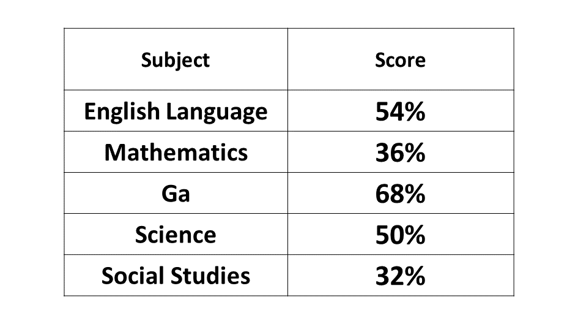
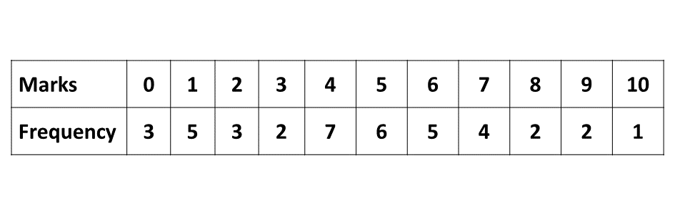

BECE
Year to Practice:
1990
1991
1992
1993
1994
1995
1996
1997
1998
1999
2000
2001
2002A
2002B
2003
2004
2005
2006
2007
2008
2009
2010
2011
2012
2013
2014
2015
2016
2017
2018
2019
2020
2021
2022
2023
For sponsorship:
Kindly reach us on 0208711375 or 0249969740
PAST QUESTIONS 2009
Section A
Time yourself to improve on your speed. You are to use not more than 60 minutes for this section.
Click on the link below when your are ready.
Kindly contact the administrator of the site on WhatsApp or Phone (0208711375) for the link to the test.
Section B
Try the questions first, using not more than 15 minutes for each question, and watch the accompanying videos to see how the questions are solved.
Question 1
\(a)\) Simplify: \(\frac{1200 \times 1260}{800}\) and write your answer in standard form.
\(b)\) A plot of land measures 25m by 12m. A portion of this plot measuring 8m by 8m is used for the cultivation of vegetables. Find the area of the plot not cultivated.
\(c)\) The table below shows the performance of Aisha in her final examination.

Draw a pie chart to represent this information.
Question 2
The table below shows the scores of some students in an examination.
From the table, find
\(a)\) how many students wrote the examination
\(b)\) the modal score;
\(c)\) the number of students that scored 7 or more;
\(d)\) the mean score correct to one decimal place.
Question 3
\(a)\) \(i)\) Using a scale of 2 cm to 1 unit on both axes, draw two perpendicular axes \(OX\) and \(OY\) on a graph sheet.
\(\hspace{0.5cm} ii)\) Mark on the same graph sheet, the \(x\)-axis from \(-5\) to \(5\) and \(y\)-axis from \(-6\) to \(6\).
\(\hspace{0.5cm} iii)\) Plot the points \(A(2, 5)\), \(B(2, 2)\) and \(C(4, 2)\). Join the points \(A\), \(B\) and \(C\) to form a triangle \(ABC\).
\(\hspace{0.5cm} iv)\) Using the \(y\)-axis as mirror line, draw the image triangle \(A_1B_1C_1\) of the triangle \(ABC\) such that \(A \rightarrow A_1\), \(B \rightarrow B_1\) and \(C \rightarrow C_1\). Write down the coordinates of \(A_1\), \(B_1\) and \(C_1\).
\(\hspace{0.5cm} v)\) Draw the image triangle \(A_2B_2C_2\) of triangle \(ABC\) under anticlockwise rotation of \(180^\circ\) about the origin, where \(A \rightarrow A_2\), \(B \rightarrow B_2\) and \(C \rightarrow C_2\). Write down the coordinates of \(A_2\), \(B_2\) and \(C_2\).
\(b)\) Given that \(\mathbf{a} = \begin{pmatrix}-3 \\ 2 \end{pmatrix}\), \(\mathbf{b} = \begin{pmatrix}-5 \\ -7 \end{pmatrix}\) and \(\mathbf{c} = \begin{pmatrix}-4 \\ -1 \end{pmatrix}\), evaluate \(2\mathbf{a} - 3\mathbf{c} + \mathbf{b}\)
Question 4
\(a)\) The ratio of the sheep to goat on a farm is \(4:7\). If there are \(1,428\) sheep, find how many goats are on the farm.
\(b)\) Using a ruler and a pair of compasses only, construct a triangle \(ABC\) with \(|AB| = 6\) cm, \(|AC| = 8\) cm and angle \(BAC = 30^\circ\). Construct the bisector of angle \(ACB\) to meet line \(AB\) at \(D\).
\(\hspace{0.5cm} i)\) Measure \(|AD|\) and \(|BD|\).
\(\hspace{0.5cm} ii)\) Write down the ratio \(|AD| : |BD|\)
Question 5
\(a)\) The diagram is a triangle \(ABC\) with the side \(AC\) produced to \(D\). Find
\(\hspace{0.5cm} i)\) the value of \(x\);
\(\hspace{0.5cm} ii)\) angle \(ACB\).
\(b)\) The simple interest formula, \(I = \frac{PTR}{100}\) gives the interest, \(I\) on a principal, \(P\) invested at a rate, \(R\) per annum for time, \(T\) years.
\(\hspace{0.5cm} i)\) Find the simple interest on Gh₵3,600.00 at 15% per annum for 2 years.
\(\hspace{0.5cm} ii)\) Make \(R\) the subject of the simple interest formula.
\(\hspace{0.5cm} iii)\) At what rate per annum will Gh₵6,000.00 earn Gh₵2,400.00 simple interest in 2 years?
Question 6
\(a)\) Given that ₵10,000.00 = Gh₵1.00. Complete the following table relating cedis \((x)\) to Ghana cedis \((y)\).
\(b)\) \(i)\) On a graph sheet, draw two perpendicular axes \(Ox\) and \(Oy\).
\(\hspace{0.5cm} ii)\) Using a scale of 2 cm to ₵50,000.00 on the \(Ox\) axis and 2 cm to Gh₵5.00 on the \(Oy\) axis, mark the \(Ox\) axis from 0 to ₵500,000.00 and \(Oy\) axis from 0 to Gh₵50.00.
\(c)\) Plot the points and join them with a straight line.
\(d)\) From your graph, find the value of
\(\hspace{0.5cm} i)\) Gh₵8.00 in cedis (₵);
\(\hspace{0.5cm} ii)\) Gh₵35.00 in cedis (₵);
\(\hspace{0.5cm} iii)\) ₵260,000.00 in Ghana cedis (Gh₵).